All the materials in here, about path tracing, have come from Veach's PhD
thesis. So, in a way, DTOADQ, at this stage, is just an implementation of
BDPT as described in veach's thesis to the GPU, along with pulling from
other resources such as Physically Based Render [PBR] 3rd ed. In order
to understand the mathematics for BDPT, it must be worked up starting from
light transport. So this section is about transforming the algorithms and
mathematical models into something easily and efficiently implementable for
the GPU, even if some of it is a rewrite of the mathematical model so that a
programmer could understand it. In order to compute a normal of an SDF, you
must perform a gradient approximation: the central distance onf the SDF at
P. For example, the difference quotient:
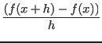
Calculating probability distribution functions is a very vital component in
Monte Carlo Sampling. The PDF states the probability of a random variable to
take the form of a given input. Its usefulness comes when contributions from
many Monte Carlo samples have a different weight. That is, one sample may
have a higher probability distribution, and thus a higher contribution to
the path. That's the strategy behind Monte Carlo;
The PDF applies to everything from path contributions, solid angles of a
BRDF, uniformly sampling a sphere, etc. I had a difficult time understanding
these, and more importantly, how to calculate them for a given formula. The
biggest conceptual barrier is that, for example, given a solid angle in a
hemisphere 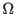, the probability for a random variable X to equal
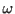 is 0. But this isn't what's happening here, this is all about the
probability that X could potentially equal when compared to other values
in . It's all about comparing the probabilities of two potential
s with each other.
I still have a hard time conceptualizing these things in my head, but the
good thing is, is that calculating these are relatively easy. There's a lot
that could be talked about, but the important thing is that I've found a
reliable three-step process. The first is to
find the cumulative distribution function
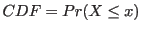. Where 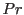
is the probability, 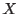 is a uniformly random variable, and 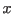 is a known
constant. In other words, this gives the probability that, for a formula
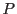, where
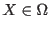, and is the set of all possible values
for 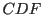,
that 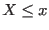. The second step is to take the derivative of this, so for
PDF 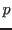
And the final step is to verify that the PDF is correct by integrating it
over , this final value should equal 1. This makes sense intuitively
- it is a probability after all, so the sum of the probabilities of every
possible input must be 1.
For an example, how I calculated the PDF of an area light source
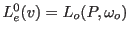
is quite simple. Firstly,the area light is defined as a sphere, and thus our
set of all possible values is correlated to surface area:
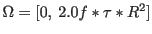.
Thus for a given constant , and a uniformly random ,
| 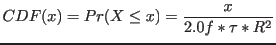 |
(3) |
| 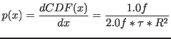 |
(4) |
| 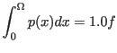 |
(5) |
In code
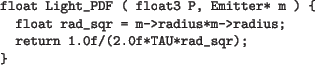
The more interesting aspect, in this example, is actually generating the
uniformly distributed samples of a sphere. The naive method gives incorrect
distributions.TODO page 774
The most obvious way to calculate this is the six-point gradient; where for
each axis you compute
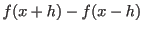, and normalize the result. This
returns a vector pointing in the direction where the map's SDF changes the
most: the normal. A four point gradient is possible; as long as each each
point of the gradient is multiplied by 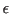 before normalizing. The
speedup from six to four is worthwhile, as computing each gradient is
expensive as it involves a sdf map call. There are more utilities with
gradients not yet currently provided in DTOADQ but are worth mentioning, a
few are: an additional normal call using an alternative (higher-quality) SDF
map can be used to compute a 'normal' bumpmap, and analyzing the gradient by
hand allows a cheap normal computation of primitives such as a spheres.
Rendering equation with solid angle:
 |
(6) |
To get from solid angle to path, consider:
| 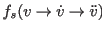 |
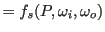 |
(7) |
| 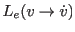 |
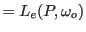 |
(8) |
|
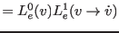 |
(9) |
That is, instead of looking at a point with an incoming and outgoing
angle
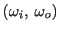, look at the path from 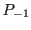 (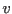) to
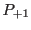 (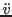). More accurately, it's the transport between
three different surfaces of the scene. In terms of SDFs, the surface
is every point on an SDF map where
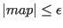. There's no longer
any integration over a hemisphere with solid angle 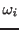, it's now over
every single surface in the scene. This will be explained in detail later.
In the case of 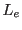,
DTOADQ [at least, for now], only has support for area-light. Thus consider:
| 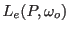 |
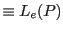 |
[ for area lights ] |
(10) |
|
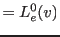 |
|
(11) |
The cos term, used for the projected solid angle in irradiance, no longer
applies when dealing with area. This and 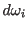 now become a
generalized geometry term, G, that converts a PDF with respect to solid area
using Jacobian mapping, which involves the inverse squared distance, and the
cosine angle between the geometric normals at and 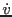:
Where 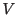 is the visibility test. Thus the rendering equation with respects
to area is:
where 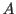 is the area on 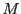, and is the union of all scene surfaces.
This is known as the three-point form or the light transport equation. By
recursively expanding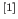, so that the three point form is integrated
over every possible set of possible paths, this can be rewritten as the more
usable format:
Where 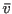 is a path
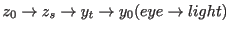, is the combination of all possible
paths of any length, and is the area-product measure [the product of
all the expanded ]. Special care has to be taken with the definition of
path itself, as in the source code, there never exists a path ,
only eye-path and light-path . Right now, this is analytically
unsolvable. To compute this, we need to apply monte carlo sampling and limit
the maximum path length:
where is the light-path length, and is the eye-path length. In
DTOADQ, they are limited to
[TODO]. Finally, to transform
into two seperate paths,
is split into two with a connection edge
And now
There is no case for as either, the path doesn't exist, or if one
does exist, and do not contribute to the image. Veach (and many other
sources), leave this in, but it's unnecessarily confusing. A special case
needs to be handled, unfortunately, for
as it is being
generated on the fly while is being constructed. The two options
is to unroll the first iteration of the construction loop, or just allow the
special case to exist. The latter is the better choice, as all kernels will
enter and exit the special case at the same time, and the GPU might just
unroll the loop anyways.
There may be cases where ( is not possible without a
physical camera lens), which is equivalent to just forward path tracing.
There is also to consider, what happens on and , Well, in either case where both paths exist or only the camera path exists,
the connection strategy below describes how to connect the edges of the two
paths
One question to be made is if the strategy
is worthwhile to
compute; the most noticeable effect are for caustics, light sources in
direct view of an emitter should be emitted from animations in this current
state of DTOADQ. Another idea to consider is that under real physics
circumstances, the photons are still allowed to bounce after hitting a
source of light, but the contribution from these cases are negligible, and
so most likely not worthwhile to implement. Anyways, the
strategy is a worthwhile calculation under these circumstances
One immediately obvious optimization that could be made with this model is
in regards to the visibility check in the geometric term, if you were to
expand , and take the V term from outside the G function
[
],
it would be made obvious that all the visibility checks can be
cancelled out for the entire equation, except for the connection term .
The expansion is not shown as it is very lengthy, and unnecessary. Paths
and
being
visible is intuitively obvious as the paths have been generated using the
same technique used to check for visibility; raymarching. Specifically, the
definition of is
where is a march through the SDF map. A visibility check is only
necessary for the connection edge
|
|
 for all paths but for all paths but |
|
Moving on, for
, these are equivalent for both and ,
the problem is that the path is generated in perspective of the
light source, so we have to call the BSDF in perspective of the camera; the
path is flipped. Handling is significantly easier than ,
as is precomputed. For , the next vertex
( in the perspective of SA), is unknown. For example
in OpenCL looks like:
For , there is no cases for
as
the lens does not have a physical existence in the SDF map. is
the PDF w.r.t. area, for the light path; we only need to take the PDF of the
solid angle of a sphere
where is the radius of the sphere, note is a point on the surface
of the sphere, and not its origin.
doesn't exist, as there is no physical lens
on the scene. [TODO - this might cahnge later]. One of the benefits of this,
is that there are no special cases for pathes where , which is
impossible to handle on the GPU as the path could contribute to any
arbitrary pixel [directly hitting the lens].
The is contribution from the light source. As of right now, DTOADQ
only supports area lights, so is set a constant for the emitter's
spectrum value.
The is contribution from the eye source, that is, the lens. Since
the lens does not exist in the scene, as of now [TODO - this might change
later], there is no . While this should be implemented in the future,
a hidden benefit of the current model is that there are no special cases for
paths where , which is impossible to handle on the GPU as any such
path could contribute to any arbitrary pixel [the light path is, after all,
directly hitting the lens]. So this has now become:
The amount that each path contributes to F differ greatly, so naively
weighing each contribution uniformly by something like 1.0f, or even, by
inverse path length, will producy very noisy images, and would not be
worth the additional computation time that BDPT requires, as shown below.
 |
(27) |
In order to get good
samples from the contributions, they must be combined in an optimal manner
using Multiple Importance Sampling: each contribution is weighted by the PDF
of the entire path itself:
where is the MIS weight of path
, and
is the unweighted contribution of the same path. For clarity,
as described below is the unweighted contribution of the
algorithm:
thus
The formula Veach gives for Multiple Importance Sampling on BDPT is as so:
Conceptually, the numerator
is the path density that was
generated, while the denominator is the path density of other connection
strategies that could could have, in theory, created the path. The
straight forward implementation of this has a lot of problems gone
unresolved in Veach's thesis; PBR 3rd Ed, chapter 16 pg 1014-1016 addresses
and describe these problems. Primarily,
will overflow
CLFloat (due to the distance in the Geometric term), and the straight
forward implementation is very long, hard to debug, and has a poor time
complexity. But the important part is the end result of their solution:
However, DTOADQ can simplify a bit further; unlike above, there are two
paths for which to evaluate. Specifically, in the above term, for where
, we have
,
which is the light path (i is iterating towards light-length s). The eye
contribution is inversed from this, (also iterating towards s, hence why
is used). Another way of saying it, is
.
In DTOADQ's case, the weights are calculated in
the same direction relative to its originator; in this case the perspective
of the eye path.
And then the expanded form of
looks like
And now the MIS looks like:
Thus, the final rendering equation for DTOADQ looks like such: